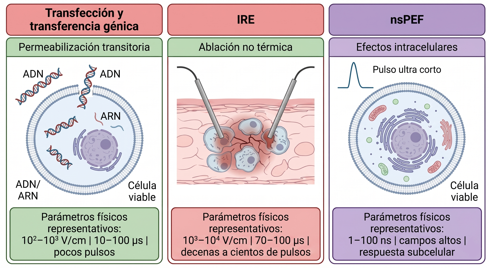

Aplicaciones de la electroporación
Transferencia molecular, ablación no térmica, nsPEF y biotecnología
1 Propósito del módulo
La electroporación es una plataforma física: el mismo principio de aumento controlado de permeabilidad puede utilizarse para fines muy distintos.
Este módulo resume aplicaciones representativas y muestra cómo dependen del régimen físico de operación.
2 Idea organizadora
El resultado biológico depende de la combinación entre:
- intensidad del campo eléctrico;
- duración del pulso;
- número de pulsos;
- forma de onda;
- blanco biológico;
- escala espacial;
- dosis energética;
- recuperación celular.
La Figura 1 resume tres aplicaciones representativas de la electroporación organizadas según el régimen físico dominante: permeabilización transitoria para transferencia molecular, electroporación irreversible para ablación no térmica y pulsos eléctricos de nanosegundos para inducir respuestas intracelulares o subcelulares.

La comparación muestra que la diferencia entre aplicaciones no está en el principio general —la electropermeabilización de membranas—, sino en el régimen de operación elegido. Al modificar la intensidad del campo, la duración del pulso, el número de pulsos y la escala temporal, cambia el blanco biológico dominante y, por tanto, el resultado esperado.
3 Transferencia molecular y transfección
En el régimen reversible, la electroporación permite introducir moléculas en células viables.
Entre las moléculas de interés se incluyen:
- ADN plasmídico;
- ARN;
- proteínas;
- sondas fluorescentes;
- fármacos;
- nanopartículas o complejos moleculares.
La meta es aumentar temporalmente la permeabilidad sin comprometer de manera irreversible la viabilidad celular.
Este principio se usa en:
- transfección celular;
- transferencia génica;
- producción de líneas celulares modificadas;
- investigación en biología molecular;
- desarrollo de vacunas y terapias génicas.
4 Electroquimioterapia
La electroquimioterapia combina pulsos eléctricos con fármacos antitumorales cuya entrada a la célula es limitada en condiciones normales.
La electroporación aumenta transitoriamente la permeabilidad de la membrana, favoreciendo la entrada del medicamento y potenciando su efecto local.
En este caso, el objetivo no es necesariamente introducir material genético, sino mejorar la entrega intracelular de un compuesto terapéutico.
5 Electroporación irreversible
La electroporación irreversible busca inducir pérdida permanente de viabilidad celular mediante daño de membrana dominante.
Se utiliza principalmente en ablación no térmica de tejidos, en especial cuando se desea destruir células preservando parcialmente estructuras extracelulares.
Su interés biomédico radica en que puede actuar como una modalidad de ablación diferente a métodos puramente térmicos.
6 Pulsos eléctricos de nanosegundos
Los pulsos eléctricos de nanosegundos, o nsPEF, emplean duraciones extremadamente cortas y campos elevados.
Estos protocolos se investigan por su capacidad de inducir respuestas subcelulares, incluyendo efectos sobre:
- organelos;
- señalización intracelular;
- calcio;
- mitocondrias;
- apoptosis;
- membranas internas.
Su interpretación requiere considerar escalas temporales de carga, amplitud del campo, geometría celular y propiedades eléctricas internas.
7 Procesamiento de alimentos y biotecnología
La electroporación también se utiliza en contextos no médicos.
En alimentos y bioprocesos puede aplicarse para:
- facilitar extracción de compuestos intracelulares;
- mejorar transferencia de masa;
- modificar textura;
- inactivar microorganismos;
- asistir procesos de secado;
- mejorar rendimiento de extracción en tejidos vegetales.
En estos casos, la muestra suele ser un tejido o suspensión celular, no una célula aislada. Por ello, la distribución espacial del campo y el calentamiento son especialmente importantes.
8 Comparación de aplicaciones
| Aplicación | Régimen dominante | Objetivo |
|---|---|---|
| Transfección | reversible | introducir ADN, ARN o moléculas manteniendo viabilidad |
| Electroquimioterapia | reversible o parcialmente irreversible | aumentar entrada de fármacos |
| IRE | irreversible no térmica | ablación celular |
| nsPEF | pulsos ultracortos | modular respuestas subcelulares |
| Procesamiento de alimentos | reversible o irreversible según protocolo | extracción, inactivación o modificación de tejido |
9 Criterio físico común
Todas estas aplicaciones comparten una idea central:
La membrana puede pasar de ser una barrera selectiva a una interfaz permeabilizada mediante control físico del estímulo eléctrico.
La diferencia entre aplicaciones no está en el principio básico, sino en el régimen de operación y en el resultado biológico buscado.
10 Cierre
La electroporación muestra cómo un concepto de física de membranas puede convertirse en una tecnología transversal. Su comprensión exige conectar estructura molecular, electromagnetismo, termodinámica, transporte, instrumentación y respuesta biológica.